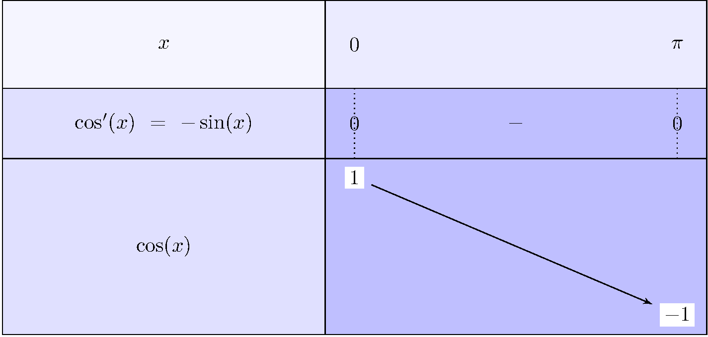
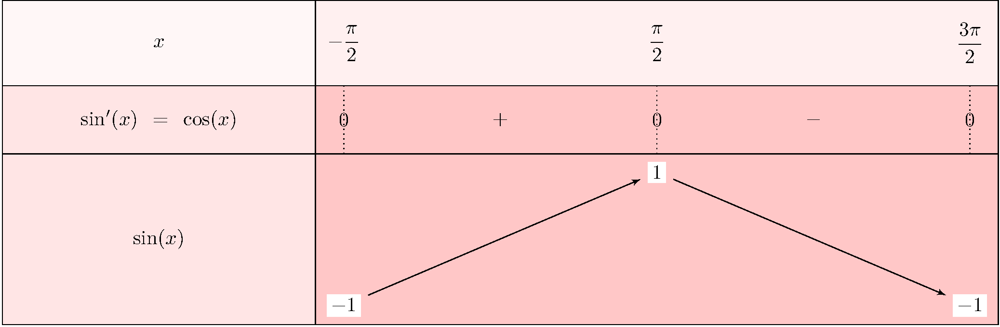

Du cercle trigonométrique aux dérivées et primitives : maîtriser les deux fonctions fondamentales de l'analyse.
Les fonctions cosinus et sinus sont les pierres angulaires de la trigonométrie. Apparues pour décrire des phénomènes périodiques (oscillations, ondes, rotations), elles sont omniprésentes en physique, en musique, en ingénierie. En Terminale, on approfondit leur étude : dérivées, primitives, résolution d'équations, et étude de fonctions composées.
Dans ce chapitre, on travaille toujours en radians. Le cercle trigonométrique est le cercle de centre \(O\) et de rayon 1. À tout réel \(x\), on associe un point \(M\) sur ce cercle : l'abscisse de \(M\) est \(\cos(x)\), l'ordonnée est \(\sin(x)\).
Dans un repère orthonormal, on considère le cercle trigonométrique (de centre \(O\), rayon 1). Pour un réel \(x\), on note \(M\) le point du cercle correspondant à l'angle \(x\) (mesuré en radians, dans le sens trigonométrique depuis l'axe des abscisses).
On a donc toujours \(M = (\cos(x),\, \sin(x))\) et \(-1 \leq \cos(x) \leq 1\), \(-1 \leq \sin(x) \leq 1\).
Conséquence : La courbe de \(\cos\) est symétrique par rapport à l'axe des ordonnées. L'étude de \(\cos\) sur \([0;\pi]\) suffit (par parité, on en déduit le reste). L'étude de \(\sin\) sur \(\left[-\frac{\pi}{2};\frac{3\pi}{2}\right]\) permet de reconstituer une période entière.
Pour tout réel \(a\) :
\[ \cos(x) = \cos(a) \iff x = a + 2k\pi \quad \text{ou} \quad x = -a + 2k\pi, \quad k \in \mathbb{Z} \] \[ \sin(x) = \sin(a) \iff x = a + 2k\pi \quad \text{ou} \quad x = \pi - a + 2k\pi, \quad k \in \mathbb{Z} \]Méthode : On lit d'abord la valeur de référence \(a\) (sur \([0;\pi]\) pour cosinus, sur \(\left[-\frac{\pi}{2};\frac{\pi}{2}\right]\) pour sinus), puis on applique la formule pour trouver toutes les solutions.
À connaître absolument (à retrouver depuis le cercle trigonométrique) :
| \(x\) | \(0\) | \(\dfrac{\pi}{6}\) | \(\dfrac{\pi}{4}\) | \(\dfrac{\pi}{3}\) | \(\dfrac{\pi}{2}\) | \(\pi\) |
|---|---|---|---|---|---|---|
| \(\cos(x)\) | \(1\) | \(\dfrac{\sqrt{3}}{2}\) | \(\dfrac{\sqrt{2}}{2}\) | \(\dfrac{1}{2}\) | \(0\) | \(-1\) |
| \(\sin(x)\) | \(0\) | \(\dfrac{1}{2}\) | \(\dfrac{\sqrt{2}}{2}\) | \(\dfrac{\sqrt{3}}{2}\) | \(1\) | \(0\) |
Puisque \(\cos\) est paire et \(2\pi\)-périodique, son étude sur \([0\,;\,\pi]\) suffit. Sur cet intervalle, \(\cos'(x)=-\sin(x)\leq 0\), donc \(\cos\) est strictement décroissante.


Sur cet intervalle, \(\sin'(x)=\cos(x)\) s'annule en \(x=\dfrac{\pi}{2}\) (et change de signe) : \(\sin\) est strictement croissante sur \(\left[-\dfrac{\pi}{2};\dfrac{\pi}{2}\right]\) et strictement décroissante sur \(\left[\dfrac{\pi}{2};\dfrac{3\pi}{2}\right]\). Elle atteint son maximum \(1\) en \(x=\dfrac{\pi}{2}\) et son minimum \(-1\) aux extrémités.
Les deux applets ci-dessous illustrent les courbes de \(\cos\) et \(\sin\) sur deux périodes. L'axe des abscisses est gradué en multiples de \(\dfrac{\pi}{2}\).
Courbe de \(y=\cos(x)\) — en bleu — sur \([-2\pi\,;\,2\pi]\)
Courbe de \(y=\sin(x)\) — en rouge — sur \([-2\pi\,;\,2\pi]\)
Astuce mnémotechnique : \(\cos \xrightarrow{\text{dériver}} -\sin \xrightarrow{\text{dériver}} -\cos \xrightarrow{\text{dériver}} \sin \xrightarrow{\text{dériver}} \cos\). On tourne en cycle de longueur 4, avec un signe négatif au passage par \(-\sin\) et \(-\cos\).
Si \(u\) est une fonction dérivable sur un intervalle \(I\), alors :
\[ \bigl(\cos(u(x))\bigr)' = -u'(x)\,\sin(u(x)) \] \[ \bigl(\sin(u(x))\bigr)' = u'(x)\,\cos(u(x)) \]Pour les fonctions composées (\(a\) constante non nulle) :
\[ \int \cos(ax+b)\,dx = \frac{1}{a}\sin(ax+b) + C \qquad \int \sin(ax+b)\,dx = -\frac{1}{a}\cos(ax+b) + C \]On en déduit immédiatement : \(\cos^2(x) = 1 - \sin^2(x)\) et \(\sin^2(x) = 1 - \cos^2(x)\).
Pour calculer l'intégrale de \(\cos^2(x)\) ou \(\sin^2(x)\), on linéarise d'abord :
\[ \cos^2(x) = \frac{1+\cos(2x)}{2} \qquad \sin^2(x) = \frac{1-\cos(2x)}{2} \]Ces formules se déduisent directement de \(\cos(2x) = 2\cos^2(x)-1\) et \(\cos(2x) = 1-2\sin^2(x)\).
Calculer la dérivée de \(f(x) = \sin(3x^2 - 1)\).
On pose \(u(x) = 3x^2 - 1\), donc \(u'(x) = 6x\). La fonction est de la forme \(\sin(u)\), donc :
\[ f'(x) = u'(x)\cos(u(x)) = 6x\,\cos(3x^2-1) \]Résoudre \(\cos(x) = \dfrac{1}{2}\) sur \([0\,;\,2\pi]\).
On cherche \(a \in [0;\pi]\) tel que \(\cos(a) = \dfrac{1}{2}\). D'après le tableau des valeurs usuelles, \(a = \dfrac{\pi}{3}\).
Donc les solutions sur \(\mathbb{R}\) sont :
\[ x = \frac{\pi}{3} + 2k\pi \quad \text{ou} \quad x = -\frac{\pi}{3} + 2k\pi, \quad k\in\mathbb{Z} \]Sur \([0\,;\,2\pi]\) : \(x_1 = \dfrac{\pi}{3}\) et \(x_2 = 2\pi - \dfrac{\pi}{3} = \dfrac{5\pi}{3}\).
Calculer \(\displaystyle\int_0^{\pi/2} \sin(2x)\,dx\).
On utilise la primitive de \(\sin(ax)\) : une primitive de \(\sin(2x)\) est \(-\dfrac{1}{2}\cos(2x)\).
\[ \int_0^{\pi/2} \sin(2x)\,dx = \left[-\frac{1}{2}\cos(2x)\right]_0^{\pi/2} = -\frac{1}{2}\cos(\pi) - \left(-\frac{1}{2}\cos(0)\right) = \frac{1}{2} + \frac{1}{2} = 1 \]Calculer \(\displaystyle\int_0^{\pi} \cos^2(x)\,dx\).
On linéarise : \(\cos^2(x) = \dfrac{1+\cos(2x)}{2}\).
\[ \int_0^{\pi} \cos^2(x)\,dx = \int_0^{\pi} \frac{1+\cos(2x)}{2}\,dx = \frac{1}{2}\left[x + \frac{\sin(2x)}{2}\right]_0^{\pi} = \frac{1}{2}\!\left(\pi + \frac{\sin(2\pi)}{2} - 0 - \frac{\sin 0}{2}\right) = \frac{\pi}{2} \]
1. On écrit \(\dfrac{2\pi}{3} = \pi - \dfrac{\pi}{3}\). Donc :
\[ \cos\!\left(\frac{2\pi}{3}\right) = -\cos\!\left(\frac{\pi}{3}\right) = -\frac{1}{2} \qquad \sin\!\left(\frac{2\pi}{3}\right) = \sin\!\left(\frac{\pi}{3}\right) = \frac{\sqrt{3}}{2} \]2. Cosinus est une fonction paire donc \(\cos\!\left(-\dfrac{\pi}{4}\right) = \cos\!\left(\dfrac{\pi}{4}\right) = \dfrac{\sqrt{2}}{2}\).
3. On écrit \(\dfrac{5\pi}{6} = \pi - \dfrac{\pi}{6}\), donc : \(\sin\!\left(\dfrac{5\pi}{6}\right) = \sin\!\left(\dfrac{\pi}{6}\right) = \dfrac{1}{2}\).
Calculer la dérivée de chacune des fonctions suivantes :
1. \(f'(x) = -5\sin(5x)\).
2. \(g'(x) = 2x\cos(x^2+1)\).
3. Règle du produit : \(h'(x) = 1\cdot\cos(x) + x\cdot(-\sin(x)) = \cos(x) - x\sin(x)\).
4. On pose \(u = \sin(x)\), \(u' = \cos(x)\). Alors \(k(x) = u^2\), donc \(k'(x) = 2u\cdot u' = 2\sin(x)\cos(x) = \sin(2x)\).
Résoudre dans \(\mathbb{R}\) :
1. La valeur de référence est \(a = \dfrac{\pi}{3}\) (car \(\sin\!\left(\dfrac{\pi}{3}\right) = \dfrac{\sqrt{3}}{2}\)). Donc : \[ x = \frac{\pi}{3} + 2k\pi \quad \text{ou} \quad x = \pi - \frac{\pi}{3} + 2k\pi = \frac{2\pi}{3} + 2k\pi, \quad k\in\mathbb{Z} \]
2. \(\cos(2x) = 0 \Leftrightarrow 2x = \dfrac{\pi}{2} + k\pi \Leftrightarrow x = \dfrac{\pi}{4} + \dfrac{k\pi}{2}\), \(k\in\mathbb{Z}\).
3. \(2\cos(x)+1=0 \Leftrightarrow \cos(x) = -\dfrac{1}{2}\). La valeur de référence est \(\dfrac{\pi}{3}\), et \(\cos\!\left(\dfrac{2\pi}{3}\right) = -\dfrac{1}{2}\). Donc : \[ x = \frac{2\pi}{3} + 2k\pi \quad \text{ou} \quad x = -\frac{2\pi}{3} + 2k\pi, \quad k\in\mathbb{Z} \]
Calculer les intégrales suivantes :
1. \[ \int_0^{\pi} \sin(x)\,dx = \bigl[-\cos(x)\bigr]_0^{\pi} = -\cos(\pi)+\cos(0) = 1+1 = 2 \]
2. \[ \int_0^{\pi/4} \cos(2x)\,dx = \left[\frac{\sin(2x)}{2}\right]_0^{\pi/4} = \frac{\sin(\pi/2)}{2} - \frac{\sin(0)}{2} = \frac{1}{2} \]
3. Linéarisation : \(\sin^2(x) = \dfrac{1-\cos(2x)}{2}\). \[ \int_0^{\pi/2} \sin^2(x)\,dx = \int_0^{\pi/2}\frac{1-\cos(2x)}{2}\,dx = \frac{1}{2}\left[x - \frac{\sin(2x)}{2}\right]_0^{\pi/2} = \frac{1}{2}\cdot\frac{\pi}{2} = \frac{\pi}{4} \]
On considère la fonction \(f(x) = x + \sin(x)\) définie sur \(\mathbb{R}\).
1. \(f'(x) = 1 + \cos(x)\). Or \(\cos(x) \geq -1\) pour tout \(x\), donc \(f'(x) \geq 0\). De plus \(f'(x) = 0 \Leftrightarrow \cos(x) = -1 \Leftrightarrow x = \pi + 2k\pi\) (points isolés). Donc \(f\) est strictement croissante sur \(\mathbb{R}\).
2. \(f(-x) = -x + \sin(-x) = -x - \sin(x) = -(x+\sin(x)) = -f(x)\). Donc \(f\) est impaire.
3. Sur \(\left[-\dfrac{\pi}{2};\dfrac{\pi}{2}\right]\), \(f\) est strictement croissante. \[ f\!\left(-\frac{\pi}{2}\right) = -\frac{\pi}{2} + \sin\!\left(-\frac{\pi}{2}\right) = -\frac{\pi}{2} - 1 \approx -2{,}57 \] \[ f\!\left(\frac{\pi}{2}\right) = \frac{\pi}{2} + 1 \approx 2{,}57 \] \(f\) est donc croissante de \(-\dfrac{\pi}{2}-1\) à \(\dfrac{\pi}{2}+1\), sans extremum local sur cet intervalle ouvert.
1. \[ \cos(3x) = \cos(2x+x) = \cos(2x)\cos(x) - \sin(2x)\sin(x) \] \[ = (2\cos^2(x)-1)\cos(x) - 2\sin(x)\cos(x)\cdot\sin(x) = 2\cos^3(x) - \cos(x) - 2\cos(x)\sin^2(x) \] En remplaçant \(\sin^2(x) = 1-\cos^2(x)\) : \[ = 2\cos^3(x) - \cos(x) - 2\cos(x)(1-\cos^2(x)) = 4\cos^3(x) - 3\cos(x) \] Donc \(\cos(3x) = 4\cos^3(x) - 3\cos(x)\).
2. \(\cos(3x) = 0 \Leftrightarrow 4t^3 - 3t = 0\) avec \(t = \cos(x)\). On factorise : \(t(4t^2-3) = 0\), donc \(t = 0\) ou \(t^2 = \dfrac{3}{4}\), soit \(t = \pm\dfrac{\sqrt{3}}{2}\). \[ \cos(x) = 0 \Rightarrow x = \frac{\pi}{2}+k\pi \quad;\quad \cos(x) = \frac{\sqrt{3}}{2} \Rightarrow x = \pm\frac{\pi}{6}+2k\pi \quad;\quad \cos(x) = -\frac{\sqrt{3}}{2} \Rightarrow x = \pm\frac{5\pi}{6}+2k\pi \]
| \(x\) | \(0\) | \(\frac{\pi}{6}\) | \(\frac{\pi}{4}\) | \(\frac{\pi}{3}\) | \(\frac{\pi}{2}\) | \(\pi\) |
|---|---|---|---|---|---|---|
| \(\cos(x)\) | \(1\) | \(\frac{\sqrt{3}}{2}\) | \(\frac{\sqrt{2}}{2}\) | \(\frac{1}{2}\) | \(0\) | \(-1\) |
| \(\sin(x)\) | \(0\) | \(\frac{1}{2}\) | \(\frac{\sqrt{2}}{2}\) | \(\frac{\sqrt{3}}{2}\) | \(1\) | \(0\) |
| Fonction | Dérivée | Primitive |
|---|---|---|
| \(\cos(x)\) | \(-\sin(x)\) | \(\sin(x)+C\) |
| \(\sin(x)\) | \(\cos(x)\) | \(-\cos(x)+C\) |
| \(\cos(u(x))\) | \(-u'(x)\sin(u(x))\) | — |
| \(\sin(u(x))\) | \(u'(x)\cos(u(x))\) | — |
| \(\cos(ax+b)\) | \(-a\sin(ax+b)\) | \(\dfrac{1}{a}\sin(ax+b)+C\) |
| \(\sin(ax+b)\) | \(a\cos(ax+b)\) | \(-\dfrac{1}{a}\cos(ax+b)+C\) |